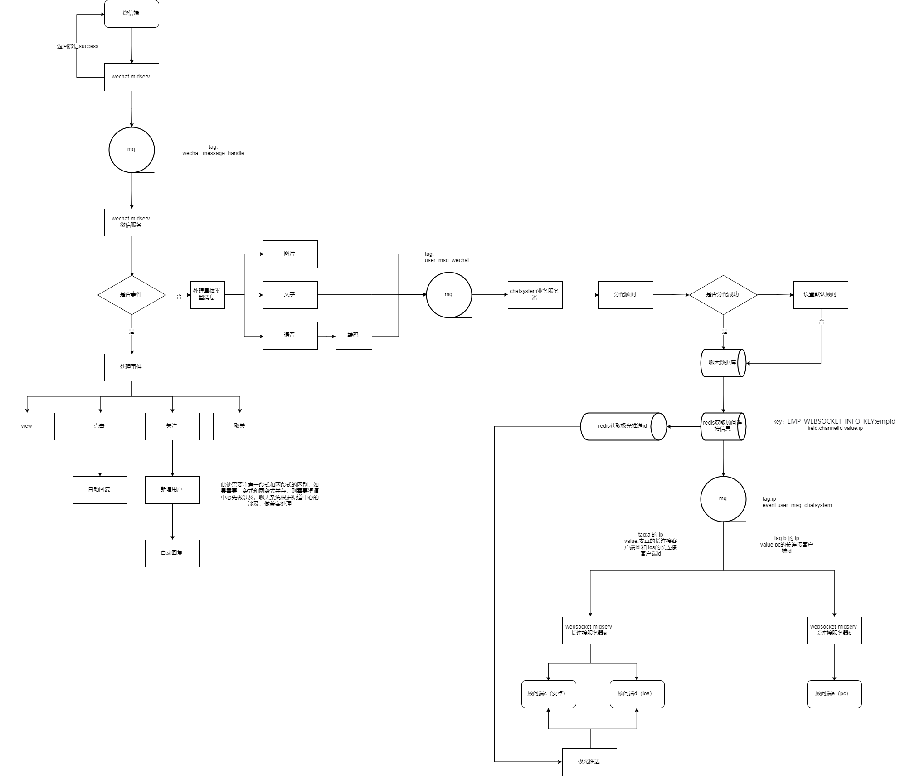
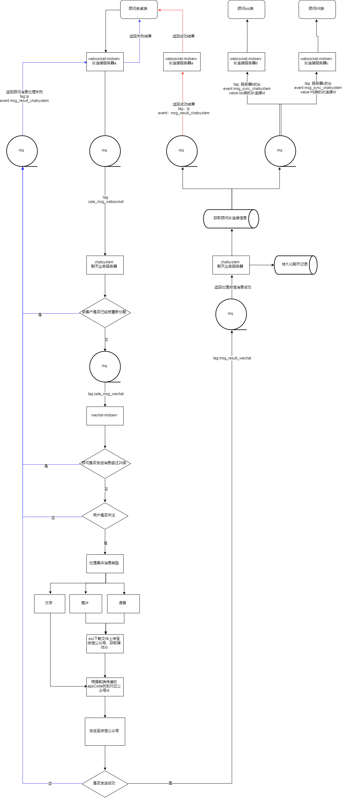
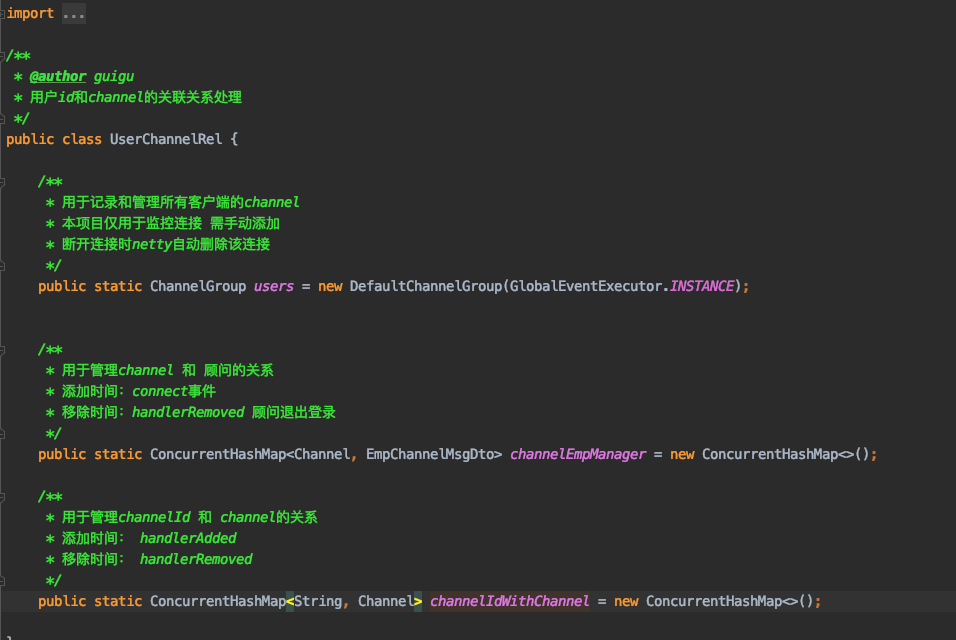
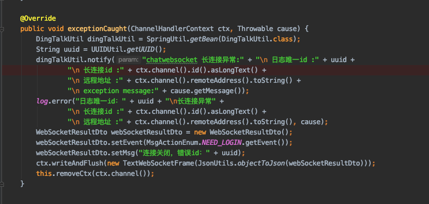
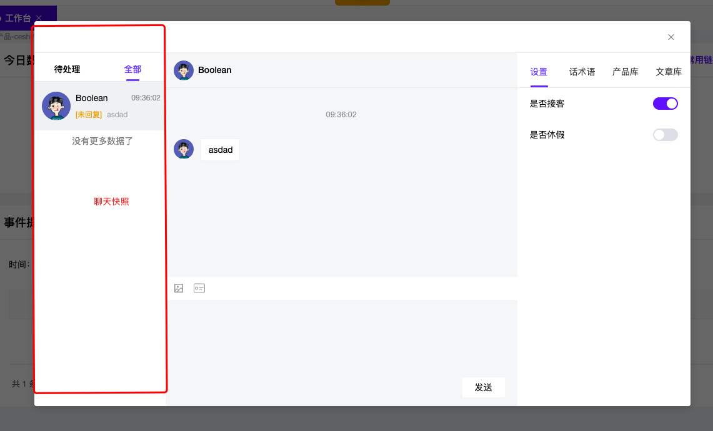
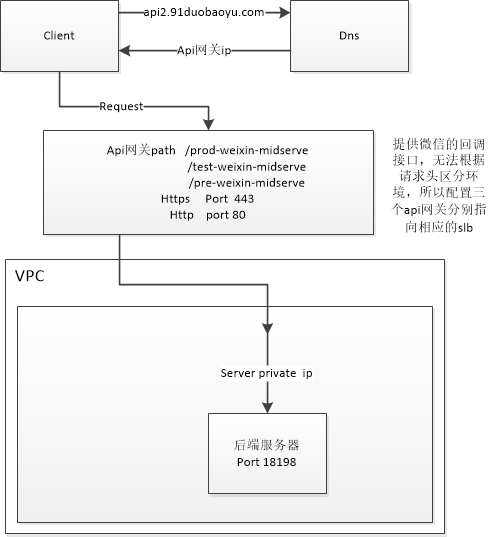
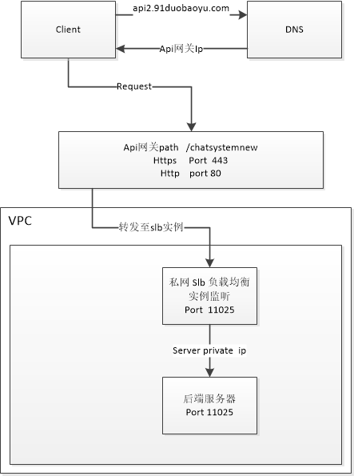

分能惠:
是工龙它城
只图2以配司
戴天获
日司
罗江演榄中
所消南饼mm

中品
社件乐
一品时

import
*@authorguigu
*用户id和channeL的关联关系处理
pubLicClassUserChanneLRel
*用于记录和管理所以有客户端的channeL
*本项目仅用于监控连接需手动添加
*断开连接时netty自动删除该连接
publicstaticchanetGoupusersnwDefauttchaeu
/林*
*用于管理channeL和顾问的关系
*添加时间:connect事件
*移除时间:handlerRemoved顾问退出登录
ieLmchMgtchWa
/**
*用于管理channeLId和channeL的关系
*添加时间:handleradded
*移除时间:handlerRemoved
nel>channelIdwithchannelnewConcurrentHashMap;
publicstaticConcurrentHashMapsringchchae

@Override
exceptioncaught(ChanneLHanderContextcxwe
publicvoid
DingTALKUTiIgTALkUtiing
StringquidUuIDUtil.GeUID;
otify(param:"chatwebsocket长连接异常:"+"日志唯一d:"
dingTalkutil.notify(parar
长连接id:+ctx.channel).idLongText)
"远程地址:"+ctx.channelO).remoteAddress).tos
"nexceptionmessage:"+causegetMessage)
Log.error("日志唯一id:"+uuid+"长连接异常"+
"n长连接id:+ctx.channelO).idO.asLongText
"远程地址:"+ctx.channelo).remoteAddresso).to
WebsocketResuttDtowebsocketResultDtonewWebsockeR
WebSockeREsuLtDtoeEven(MsgctmDLI
webSocketResuttDto.setMsg("连接关闭,错误id:"+uid)
h(newTextwebsocketFrame(Jsonltilsjn(ck)
this.removectx(ctx.channelO));

工作台
品cEsI
今日
用链
待处理
全部
Boolean
产品库
设置
文草库
话术语
09:36:02
Bodlean
是否接客
未回复]
asdad
09:36:02
是否休假
没有更多数据了
asdad
聊天快照
事件
时间
发送

api2.91duobaoyu.com-
Client
Dns
-Api网关ip
Reguest
提供微信的回调
Api网关path
h/prod-weixin-midserve
接口,无法根据
test-weixin-midserve
请求头区分环
pre-weixin-midserve
境,所以配置三
Https
Port443
个api网关分别指
Http
port80
向相应的slb
VPC
Serverprivateip
后端服务器
Port18198

api2.91duobaoyu.com
Client
DNS
Api网关lp
Reguest
Api网关path/chatsystemnew
HttPsPort443
HttPport80
VPC
转发至sIb实例一
私网sIb负载均衡
实例监听
Port11025
Serverprivateip
后端服务器
Port11025

新后台-聊天系统测试用例（修正版）.xmind(213 kB)